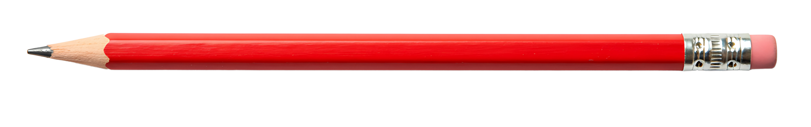
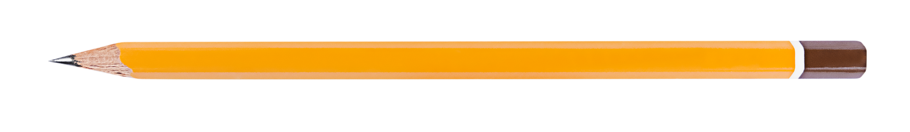

Resources

-
The Literacy Shed
Offers video prompts, animations, and visuals to spark creative storytelling. It’s perfect for kids who get inspired by images or movies before writing.
-
NaNoWriMo Young Writers Program (YWP)
A fun, kid-friendly version of National Novel Writing Month where young writers set their own word-count goals and write a novel in November. Offers an interactive site with challenges, badges, and writing tips.
-
Storybird
A visual storytelling platform that lets kids write their own stories or poems inspired by beautiful artwork. Great for sparking creativity and developing narrative skills in a safe, guided environment.
-
Scholastic Kids Press
A news-writing program where students aged 10–14 can apply to be kid reporters and write about current events. It’s an exciting way to practice journalism and see your writing published.
-
Brandon Sanderson’s Writing Lectures (YouTube)
Though designed for older teens and adults, these free lectures by fantasy author Brandon Sanderson offer clear and entertaining explanations of story structure, world-building, and character development. Great for ambitious young writers curious about professional storytelling.
-
826 Digital
Created by the nonprofit 826 National, this site offers free writing prompts, projects, and lesson plans for young writers. Includes zany, imaginative activities that build skills in poetry, fiction, and nonfiction.
-
The Story Seeds Podcast
In this podcast, real kids team up with professional authors to grow their story ideas into stories. A wonderful mix of imagination and practical writing inspiration.
-
KidLit TV
A treasure trove of videos about children’s books, author interviews, and drawing tutorials. It’s perfect for young writers who want to explore how books are made and where ideas come from.
-
Camp NaNoWriMo (April & July)
A more relaxed version of NaNoWriMo that runs in the spring and summer, allowing young writers to set their own goals and try new projects. Great for experimenting with short stories, poems, or journaling.
-
The Telling Room
A youth writing center with online writing prompts, workshops, and publications that showcase student work. It encourages kids to find their voice and share their stories with the world.
-
Writer’s HQ Free Resources for Kids
Offers a collection of downloadable resources, guides, and challenges made to motivate young writers. The tone is silly and encouraging—ideal for reluctant writers or those needing a boost.
